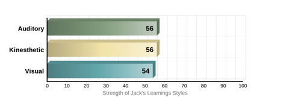
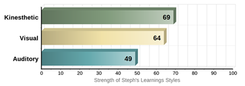
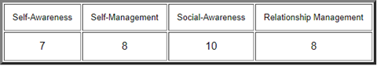
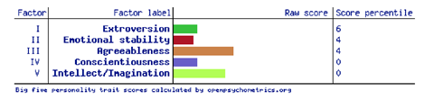

Team Mean O'Chutoy
Assessment 2: Team Project
Group GithubSean Atherton
Student Number: S3893785
Student Email: S3893785@student.rmit.edu.au
I was born in Queensland (Australia), my parents and I moved to Melbourne (Victoria) in 2003, when I was roughly 3 years old.
I have spoken English all my life and unfortunately, I do not know how to speak any additional languages, maybe if I ever travel overseas in the future, I’ll try to learn one.
I regularly talk with friends online to either play video games together or just to catch up and chat.
Before the pandemic I was occasionally going on trips with friends and family throughout Victoria, hopefully, that changes in 2021.
Myers-Briggs Results

The test results from the Myers Briggs online test class me as an “Advocate” or an INFJ-T, the specific percentages it has supplied are I’m 68% Introverted and 32% Extraverted, 65% Intuitive and 34% Observant, 71% Feeling and 29% Thinking, 80% Judging and 20% Prospecting, and finally 78% Turbulent and 22% Assertive.
Learning Style Test Results
Results indicate that I am both 35% Auditory & Visual, with the additional 30% being tactile. So, I would mainly be classed as an Auditory/Visual, with most of my effective learning been done by hearing, listening, reading, and seeing pictures. Most of the things I remember are things by sight. For example, I often use flashcards and try to visualize things I hear and or read to me.
Creativity and Problem-Solving Test Results
The Snapshot report results indicate that on a scale of 0-100 of openness to creativity I would be a 78. “Therefore, although you won’t immediately reject solutions that have worked in the past, you’d rather not have them be your only option”.
How this information may be helpful to the group.
I believe with my tendency to be more open to ideas and creative solutions will be useful when dealing with the Project Idea and scenarios where problems exist around the way to approach aspects of the content and team.
Taking the results into account when establishing a way to allow myself and the others to play to their strengths I think is the best course of action to take. Although in saying that, the results of these tests are not overly specific in their descriptions and “diagnosis” and are not too entirely accurate, so keeping that in mind and not making assumptions about what everyone can and cannot do when working together based solely on these results is something I can avoid.
Jack Holliday
Student Number: S3864772
Student Email: S3864772@student.rmit.edu.au
My interest in I.T started at a young age, constantly fighting with my brothers for access to the computer… (mostly playing games).
It was not until I had finished school and started working when I had obtained the first computer that I could call my own, but I still always had technology around be it phone, social media etc.
I expect to learn a lot about the different pathways within I.T. Working in the industry. That would help build my helpdesk role I have chosen the generalized I.T degree to help broaden my horizons and narrow down what I would like to do.
Myers-Briggs Results

You know at first, I was ignorant of the entirety of these tests. As I find myself reading through, I fit the profile. There are things in this report that I have made myself aware of, but I could not put to words. A virtuoso is someone with Introverted, Observant, Thinking, and Prospecting personality traits. They tend to have an individualistic mindset, pursuing goals without needing much external connection.
Learning Style Test Results

I very much agree with the results received. I am practical through my learning, the quickest and most efficient way to learn something is to “Throw me in the deep end” and most of the time getting my hands on what needs to be done is when I learn the most.
IPIP Big Five Factor Markers
I had completed this test and decided to add it to the mix, it completely contradicts my virtuoso profile, so as for its accountability it is questionable. I had scored high extroversion and emotional stability. I wouldn’t say that I am either extroverted or introverted I sit in the middle and have moments of each. But I agree with the emotional stability.
However, everything else had stated that I would be a terrible teammate like the way I would communicate with other team members. I would like to think I have proved it wrong!
How this information may be helpful to the group.
I think with everyone’s information compiled and read gives a good indication of the person you are going to work alongside. Having the knowledge that I like to jump in the thick of things would be beneficial for assisting with someone’s work that has already been created and needs a second opinion.
Steph Newland
Student Number: s3904486
Student Email: s3904486@student.rmit.edu.au
I was born and raised in here in Australia, however, due to my father’s nationality, I am technically half-Australian, half-German. Due to a chronic illness, I completed my ATAR in the year after I was supposed to graduate and have since studied a Bachelor of Creative Industries at ECU. I paused these studies this year to commence at RMIT as I wanted to move into a degree that I thought was better suited to the career I aspire to have in the future. I got my love of technology from my father, who is always tinkering around in his garage, whether it be with his car, a radio, or even our old PlayStation 1. IT has always been something I’ve been interested in, and as I’ve grown older and spent more time developing my skills and passions, I’ve realised it was the industry I wanted to pursue.
Myers-Briggs Results

The Myers-Briggs Type Indicator classes my personality type as INFJ-T, or the ‘Advocate.’ Breaking down these results show that I am creative, passionate, principled, and insightful. I always strive to do my best, aiming to discover the perfect solution any problem and am willing to forgo recognition or acceptance to use my strengths to help other succeed. While I can communicate effectively, I strive for constant improvement, reaching for perfection which can lead to obsession and procrastination of other responsibilities. Coupled with a tendency to circumvent criticism to avoid conflict, and the perfectionist obsession, this can lead to burnout if responsibilities are not kept balanced.
Learning Style Test Result

This learning styles test shows that I am mostly a kinesthetic or tactile learner. I learn better when I can create or work with my hands and can complete tasks by being involved through a hands-on learning experience. I also learn well visually, and can recall study more efficiently when I can physically take notes, make charts/posters, or can visualise spoken instruction into the written word.
The Big Five Personality Test (OCEAN model)
The Big Five results show that I am dedicated to my work, have a clear sense of duty and am well organised. I am compassionate, good-natured and prefer cooperation over conflict and competition as also seen in the Myers-Briggs results. While the low extraversion score shows I am quite formal and reserved, preferring to work alone and avoid direct leadership roles, I find that if I am in a group with like-minded individuals, it is much easier for me to communicate. These results are in direct competition with the Myers-Briggs results, but seem to agree with the Learning Styles test.
How this information may be helpful to the group
According to these results, I am likely to purse a path that follow my interests and aligns with my values and ideologies, making it easy to work in a team with others who hold the same interests as my own. To feel fulfilled in my work, I need a sense of independence, however, I have a strong desire to connect and communicate effectively with others to help them excel while reinforcing the team’s leadership, without being a leader myself.
Joshua Chuang
Student Number: s3729939
Student Email: s3729939@student.rmit.edu.au
Hi, I’m Josh and I am at 21-year-old student currently in my first year studying I.T online at RMIT. I was born and raised in Australia, but my both my folks are from a small island nation called Taiwan. As such I speak both English and Mandarin with the former being the language I most commonly use and the latter being what I mean use to communicate with my parents. I have always enjoyed tinkering with technology and one of the more interesting things about myself is that I enjoy fixing iPhones. The first iPhone I fixed was my iPhone 3G and have experience repairing all iPhones up to the 8th generation. Outside of I.T my main hobby is photography. I have a keen interest in shooting night photography, landscapes, and portraits.
Myers-Briggs Results

My learning style results indicate that I am a “Logician” (INTP-A/INTP-T). A closer look at logicians show that they often have unique perspectives and vigorous intellect. Logicians tend to think a lot about things and their minds constantly buzz with idea, questions and insights. Logicians tend to be introverts and tire out when having to excessively socialize. I find the last point to be very true.
Learning Style Test Results:

My learning style test results show that my primary learning style is Kinesthetic. This means that I learn via doing things. Kinesthetic learners are better at learning through hand on experiences and often get bored with traditional textbook learning. My secondary learning style is Visual, which is as the name implies, means I lean better through seeing things. Visual learners tend to benefit greatly from teaching that utilizes illustrations, charts, diagrams, videos, etc. In my past years of schooling and in my personal life I have found physical and visual learning to be the easiest way for me to pick up things.
Emotional Intelligence Test

Self-Awareness is the core of Emotional Intelligence is self-awareness. Self-awareness is comprised of three competencies; emotional self-awareness, where you can read and understand your emotions as well as recognize their impact on work performance and relationships; accurate self-assessment, where you are able to give a realistic evaluation of your strengths and limitations; and self-confidence, where you have a positive and strong sense of one’s self-worth.
Self-Management is comprised of five competencies; Self-control, which is keeping disruptive emotions and impulses under control; transparency, which is maintaining standards of honesty and integrity, managing yourself and responsibilities; and adaptability, which is the flexibility in adapting to changing situations and overcoming obstacles; achievement orientation, which is the guiding drive to meet an internal standard of excellence; and initiative, which is the readiness to seize opportunities and act.
Social-Awareness is comprised of three competencies; empathy, which is understanding others and taking an active interest in their concerns; organizational awareness, which is the ability to read the currents of organizational life, build decision networks and navigate politics; and service orientation, which is recognizing and meeting customer's needs.
Relationship-Management is comprised of seven competencies; visionary leadership, which is inspiring and guiding groups and individuals; developing others, which is the propensity to strengthen and support the abilities of others through feedback and guidance; influence, which is the ability to exercise a wide range of persuasive strategies with integrity, and also includes listening and sending clear, convincing and well-tuned messages; change catalyst, which is the proficiency in initiating new ideas and leading people in a new direction; conflict management, which is resolving disagreements and collaboratively developing resolutions; building bonds, which is building and maintaining relationships with others; and teamwork and collaboration, which is the promotion of cooperation and building of teams.
How this information may be of helpful to the group
This information will be helpful to the team as I can provide solutions with my unique perspectives to problems that may arise during the coursework. Logicians tend to analyze everything they come across and then can be helpful when there are difficult tasks that need to be tackled as I could potentially help find solutions that others may have missed. As well as being overly analytical, logicians are very open minded. This benefits the team as it means I am always open to other members suggestions and will most likely agree with other peoples idea, so long as they are supported by sound reasoning. Logicians are however a little more on the introverted side which means that I could become disconnected from my team members especially during team meeting so that is something that I will watch out for.
Liam Oloughlin
Student Number: s3908839
Student Email: s3908839@student.rmit.edu.au
Hello! I am Liam, I am 20 years old, and I am currently enrolled at RMIT completing some core and foundation subjects to move into a Bachelor of IT. I am full Australian, born and raised here. I have had a passion for gaming ever since I was super young, this sparked a big interest in mostly IT related things, it also helped that my Dads career revolves around IT too. I don’t have to many hobbies outside of gaming, but I do really like to learn languages, Currently I have only learnt Japanese, but I do want to learn more.
Myers-Briggs Results

From taking the Myers Briggs personality test, I have been determined as an “ISTP-T, Explorer, Constant Improver”, For this result to be made, a table of Percentages are generated and are put into a personality group. Percentages include, 21% Extraverted – 79% Introverted, 49% Intuitive – 51% Observant, 59% Thinking – 41% Feeling, 48% Judging – 52% Prospecting, 43% Assertive - 57% Turbulent.
Learning Style Test #1 – All-Round
My Learning style test states that I am a “Tactile” learner. Percentages being 30% for both Auditory and Visual, while Tactile sits at 40%. From a line in the Test, it states that I learn very well by DOING rather than by Listening, Seeing or Reading. I find hands-on learning to be the most effective for me by far.
Learning Style Test #2 – In Depth
My main two Learning styles are Kinesthetic and Visual. This means that I can learn more efficiently by doing hands-on experience rather than have someone tell me how to do something. I can also learn by using my sight and what's in front of me, which means I can grasp a new concept by watching a video, looking at charts or diagrams. I prefer if material that is spoken is written down or made into an activity to make sure I understand it better.
How this information may be helpful to the group
Based on the information of my results, I would fit more as someone who works at their own pace, while making sure I am not hindering the team in anyway. I also like to not take on any sort of leadership type roles but will step up to helping anyone need be. If someone needs to teach me anything I would want to be taught step-by-step and DO each step along with them.
Mia Vasiliadis
Student Number: s3909174
Student Email: s3909174@student.rmit.edu.au
I was born in Adelaide but moved to Cairns in 2000 when I was less than a year old and lived there for 15 years, before moving back to South Australia. After graduating, I moved to Melbourne in order to pursue higher education study. I have completed a Cert 3 and 4 in Information Technology through TAFE SA, focusing on the Website Development branch. My interest in IT started when I got a PS2 as a kid and wanted to try games on the PC, which led to me building my own when I was 11. Although I was initially interested in hardware and the physical components of IT, it has grown into me wanting to know about every aspect. I spend most of my free time playing games and talking to my friends.
Myers-Briggs Results

My results of the 16 personalities test state that I am an ISTP-T or ‘Virtuoso’, who are described as people with an individualistic mindset and tend to pursue goals by themselves rather than relying on external connections. ISTPs are reserved but observant, focus on facts and details, make decisions based on logic and prefer spontaneity and flexibility over being planned and organized.
Learning Style Test Result

My learning style is primarily Kinesthetic and Visual, which means I like to learn hands on and experiment with problems manually. For instance, instead of looking up a guide on how to fix a broken headset, I would much rather the challenge of taking it apart and learning about it along the way.
Big 5 Personality Test Result

How this information may be of helpful to the group
I could see how my learning style and personality could conflict with others in a team setting, as I like to work solo and tackle problems in interesting and challenging ways where others may prefer to take a different route. However, my individualism can also be seen as a positive trait, as my solo work ethic means that I can rely on my own resourcefulness and motivation to get the task ahead done, even if my approach may differ from others. My individualistic traits and self -reliance mean that I have less preference on personality types, provided my group members contribute their parts and offer their ideas. However, I realise that my solo work ethic may affect others with more dependent personality types. I would have to consider others’ ideas and work ethics, be more accepting of these differences and make sure that I can compromise a little of my individualism to maximise my group’s effectiveness.
Josh
UI/UX Design
Graphic and Web Designers, and Illustrator’s design information for visual and audio communication, publication and display using print, film, electronic, digital and other forms of visual and audio media.
Key Skills
Jack
Computer Network and Systems Engineer
Plan, develop, deploy, test and optimise network and system services, taking responsibility for configuration management and overall operational readiness of network systems, especially environments with multiple operating systems and configurations, and provide troubleshooting and fault-finding services for network problems.
Key Skills
Steph
Cyber Security Analyst/Information Security Analyst
Cyber Security Analysts/Information Security Analysts examine, assess, and investigate vulnerabilities and potential threats to an organisation’s IT infrastructure, including all of their software, hardware, networks and systems. It involves simulating attacks to identify vulnerabilities, testing new software and procedures, and advising users on how to follow security regulations and processes to ensure the networks remain safe. Security analysts also help to protect these systems and the company’s information against any outside cyber-related threats to further develop a secure and resilient infrastructure configuration.
Key Skills
Sean
Cyber Security Analyst/Information Security Analyst
Information Security Analyst analyse, assess and investigate vulnerabilities in an organisation’s IT infrastructure (software, hardware, networks, and systems) and help protect information and systems against any cyber-related threats in order to develop a stronger, secure and resilient IT infrastructure.
Key Skills
Liam
IT Networking Support/ICT Support Technician
Be able to determine Software/Hardware problems and provide solutions, implement computer Networks, Designing and Maintaining Websites, provide end-user support (able to repair and replace faulty equipment), able to adapt to modern programs and equipment.
Key Skills
Mia
Full Stack Developer
Full Stack Developers are proficient in both front-end and back-end programming languages, as well as network, server and hosting environments. They use this knowledge to build full web applications, including user interactions and servers and databases.
Key Skills

One of the most common skills when comparing the groups Ideal IT Jobs was ‘Computer and Electronics’, not that surprising considering this is the basis for all IT positions.
Our two developers (Full-Stack & UI/UX) would have a few the language skills they pick up in common. They would need to work with the systems engineers and administrators to make sure that our systems can run everything they develop alongside the cyber team to make sure It’s safe to go live with no vulnerabilities and make everything secure.
What are the Job Titles for your group's ideal jobs? How do each of these rank in terms of demand from employers?
*Ranked out of 25 active selection areas (Mar 1st, 2017 – Feb 28th, 2018)
From your group's ideal jobs, you can identify a set of skills required for these jobs.
IT Specific Skills
Generic Skills
How do the IT-specific skills in your required skill set rank in terms of demand from employers?
‘Microsoft Windows’ was in 4th place likely due to most of the non-technical or advanced work taking place on windows operating systems.
‘Project Management’ came in 5th place, its borderlines on a generic skill in my opinion as this is not IT-specific but are non the less essential when working in IT whether it’s dealing with graphic and technical design or dealing with applications.
‘Building Relationships’ placed 8th. Like ‘Project Management’ this is a non-technical skill that is abundant in requirements for IT positions.
When ranked by employers is ‘Business Analysis’ came in 9th place. This is likely due to mostly applying to consultants and positions that aim to bridge the gap between business and IT.
‘LINUX’ placed in 13th place when ranked in demand by employers.
How do the general skills in your required skill set rank in terms of demand from employers?
‘Communication Skills’ was in 1st place; this is self-explanatory and can usually be found on just about every type of job application.
‘Problem Solving’ placed in 2nd when ranked in demand.
‘Writing’ came in 4th place, this is probably one of the most generic next to communication skills but is non the less essential when working anywhere not just in IT roles.
‘Teamwork/Collaboration’ came in 5th place. Again, this is another skill that is required in any work environment that isn't completely solo. In IT there are so many types of systems on top of systems that you'll likely be dealing with other specific teams of people in various departments that when trying to solve a problem or implement a project will make teamwork and collaboration is a must.
‘Detail Oriented’ was in 8th place in demand.
‘Time Management’ was in 12th place for demand in generic skills.
What are the three highest-ranked IT-specific skills which are not in your required skill set?
Even though individually there is a few jobs of ours that will require these skills overall these skills are not required from all and not making the mark for our group's skill set.
What are the three highest-ranked general skills which are not in your required skill set?
Even though individually there is a few jobs of ours that will require these skills overall these skills are not required from all and not making the mark for our group's skill set.
Having looked at the Burning Glass data, has your opinion of your ideal job changed? Why or why not?
SEAN ATHERTON
No, my ideal job hasn’t changed for the most part as there are clear indicators that Cyber Security jobs are expected to have healthy growth over the next 5 years. However, I was still surprised that it placed so low in demand, but I still feel that the role at this stage is the best fit for me and my interests and goals.
JACK HOLLIDAY
No, I did not realize how high in demand my job was in 2018, I do know it’s a commonly sought-after role, especially when the person is doing it well.
I am happy with where it stands, but overall, I'm happy with what the job entails, I know the challenges it will produce will keep me entertained and focused.
MIA VASILIADIS
Looking at the Burning Glass data, it is no surprise that my ideal job is highest in demand, and it is still something I want to pursue. Full Stack Developers are a jack of all trades in the IT industry, and therefore are heavily sought after. Before looking at the data, I already had a good understanding of what was required and am willing to work towards having a vast skillset.
JOSH CHUANG
After looking at the Burning Glass data, I’m on the fence about my ideal job. Whilst I do think it would be fantastic to work in the field of UX/UI design, being the 14th most demanding job isn't exactly a comforting thought. I may have to reconsider my ideal job, but I was already expecting that that would the case. Ideal jobs are just that; they’re ideal but you must contend with the fact that in today's environment you probably aren't going to the job you want straight away. If I must change my specialization in I.T in order to have employment that’s fine by me.
STEPH NEWLAND
After looking through the Burning Glass data my ideal job hasn’t changed. Alongside of the Burning Glass data, information from The Australian Government’s Job Outlook shows that the number of people working in Cyber Security grew by almost 10 000 people between 2014 and 2019 and will continue to rise as we try to fill the increasing demand for cybersecurity professionals (joboutlook.gov.au, n.d.). It is surprising that considering the demand for Cyber Security professionals and the importance of the role in terms of data safety and security, the role was ranked in the middle of the field, however, this may increase over time as infrastructure and technology continue to develop and cloud computing, cryptocurrencies and machine learning continue to strengthen and the demand for cybersecurity professionals rises.
LIAM OLOUGHLIN
Honestly, I thought my job would be much higher in demand (not saying that 10th isn’t high enough) as most businesses and Enterprises run through the web/local networks. I'm confident as time goes on however this statistic may change and the demand for Network engineers will grow significantly.
I still would like to go for my ideal job as it is still something I'm interested in and can see a career in so I think my stance will stay the same.
Transcript of Interview
So, tell me a bit about yourself? How long have you been in IT?
Michael: I have been in I.T. since 1998. I started as a support technician in the Dental and Specialist Medical field in Sydney then moved to the Central Coast where I became an onsite support technician.
When I was in my late 20’s I decided I needed a new challenge, so I went to University to get a degree. When I returned to the same company that I left to go to university I was promoted to Business Development Manager then to General Manager.
What qualifications do you have?
Michael: I have three TAFE certificates from the late ’90s. I have a Bachelor of Science in Information Technology, Microsoft Certified Professional, CISCO CCNA, ITILv3 and most recently Certified Ethical Hacker.
Feels like a great time to ask what life in the day of Michael is like? What is it you do daily?
Michael: Work, work and then work some more. For the last 18 months, I have been studying hard to become an Offensive Security Certified Professional so that takes most of my time outside of work. To relax I play soccer, watch sports of all sports (soccer, rugby league, cricket) and sometimes play the Xbox.
In work time, I manage a busy office of 15 performing technical, HR, accounts and sales and marketing duties. The number and variety of these particular tasks change from day to day, but most days will incorporate these tasks to varying degrees.
What kind of people do you interact with daily? Is it other IT professionals? Clients? Investors? The public?
Michael: Clients, internal employees, and small business owners.
Where do you spend most of your time? Are you in an office or have you been moved to a home with COVID?
Michael: I spend most of my time in the office. We were moved home during COVID for about two months then we returned to the office.
What aspect of their position is most challenging?
Michael: People management, for sure. (mostly internal)
How does a business stay current on the IT Landscape?
Michael: There are several ways to stay current. I always keep up to date with tech news via tech websites and podcasts and we make business decisions based on what our clients want. For example, as little as 5 years ago our mantra was “cloud is for clowns” where we were pushing against the move to the cloud because of unstable internet connections and the expense of moving there. Fast forward a few years and we are now promoting and recommending it. You need to always keep an eye on what your market is telling you and often you find yourself pivoting to meet the changing needs of your clients. Our push into the cybersecurity space started 3 years ago and is only now starting to gain traction. Sometimes you need to make some predictions and bide your time.
You have recently started a campaign to be the face of cybersecurity on the NSW Central Coast. Tell us a little about that.
Michael has recently had the government choose his company to help spread knowledge out there about the insecurity’s that every day business may have without even realising it. Michael will be the spokesperson to help bring essential cyber security aid to the NSW central coast.
Congratulations on this wonderful achievement. Can you shed some light on what this will entail and how it changes what you will do on that daily basis?
Michael: This will mean I will become a trainer, as opposed to a manager. I will be creating a studio where I will record podcasts and produce video recordings of “how-to” and Q&A videos. This will be a subscription service that is aimed at delivering the government’s Essential Eight cybersecurity recommendations to Small and Medium Businesses in the Central Coast region. It is expected that Loyal I.T. will be able to create revenue from those businesses who are aware of cybersecurity risks but do not want to use the instructional videos and prefer a professional to implement the security measures.
Where do you see the industry moving to? Being an IT firm that caters mostly for small to medium businesses, do you think that on-premises servers are the way of the future or are you leaning more towards a cloud-based environment for these customers?
Michael: The cloud is absolutely where everything is going. In our region, the move to the cloud for many businesses is driven by lower costs. No longer do small businesses need an expensive server with expensive maintenance, they can do much of what a file server was done by purchasing an Office 365 subscription and using the cloud versions of other essential software such as accounting and CRM software. And all of this is enabled by stable and fast internet connections which the NBN has provided for in this region.
This is more of a personal question that I have found I ask myself a lot at the moment, If you went back to do it all again, Would you pursue the bachelor’s degree? Or look at other resources for certification?
Michael: I would do the bachelor’s degree again. It comes down to personal goals. What do you want to achieve? When I was at uni, I saw so many people there who were forced into the study by their parents rather than pursuing something they wanted to do. I believe having a clear vision of what you want to achieve is key, then get qualifications that support your vision. There is no right or wrong answer. For me, doing the degree was key to moving my career forward to where I wanted to be. Right now, I will not go back for a PhD in computer science because I don’t envision a future where that will be useful. I do envision a future where a hacking certificate will be useful, so that is what I am studying for. It’s all about your situation and your goals.
There seem to be a significant number of certifications and accreditations floating around different learning providers (TAFEs/Open Uni etc) that individuals can take to further their knowledge in the industry. If any, which do you recommend all cybersecurity professionals should have (besides any that are already industry standard), and if there are none, why?
Michael: I don’t have a lot of insight into what TAFE or Uni has to offer at the moment but what I use as a compass for what certifications are more valuable in the cybersecurity space is that job ads are looking for. At the moment there is a push for a degree in information technology or equivalent, OSCP and ISO 27001. This is my focus at the moment because it is what businesses are looking for. You have to be guided by market forces and if this is what the market wants for someone to gain employment, then this is what you need to focus on achieving at a minimum.
What information do you need to oversee Cybersecurity Risks?
Michael: The best form of defence is to have your systems penetration tested.
As there is so many vulnerability’s getting the red team in, is the best form of figuring out where your weak and how to build your defences.
How do you protect sensitive information handled and stored by a third-party vendor?
There is not a lot that can be done is this regard. “You are putting your data on their servers, there has to be a level of trust”.
In today’s world, what do you think is the top cybersecurity concern businesses face?
Ransomware: Michael had elaborated on a client that has been attacked.
Ransomware can come from anywhere and as such. Once they have the data everything is compromised. The client had paid the money as they did not have backups, and as such the hackers ghosted the business owner. Leaving the owner out of money and still with no data.
Do you think the creation of all the new crypto currencies are going to aid these ransomware attackers?
Can’t really be doing it any good. Nobody mines bitcoin anymore once they get onto a server as the turnover is low, so eventually you will see more of these other currency’s starting to show up and around a bit more consistently.
Blockchain & Cryptocurrency – Liam O’loughlin
What does it do?
Starting off with the Blockchain, Essentially the Blockchain is a database that is constantly updating an online record of transactions. The Blockchain is mostly used with Cryptocurrency transactions but can be used to store other types of information (InterPlanetary File System – “IFPS” for an example). The way the Blockchain works is that a “Block” of information is sent onto a list called a “chain”, which is then validated by a series of computers. This allows of anonymity and instantaneous data transfer and transactions. (CONWAY, 2020) (TechTerms, 2018)
If you have heard of the Blockchain, you most likely have stumbled across cryptocurrency. If not, a “Cryptocurrency” is a digital currency which is not governed or accessed by banks. The cryptocurrencies use the cryptography technology to secure and regulate transactions and manage the creation of new units (CMC Markets, n.d.). As the cryptocurrency market is still growing at a fast rate, the number of new coins which you can purchase stretch far beyond your traditional currencies which are used today. Since there is many coins that only allow you to mine a certain amount, the value of those coins will eventually grow to an exponential amount, take bitcoin for example, Back in 2013 the coin was only worth around $103AUD, but has climbed to $77,500AUD *$59,000USD* (at the time of writing this report) in this current time. In 3 or more years, who knows what this number could even reach.
Many of these coins have a sort of meaning behind why they can get so valuable. Bitcoin being the founding step for Cryptocurrencies as a whole. Ethereum (ETH) is a cryptocurrency which can also be Developed into tokens and new coins as well!
A new and upcoming ETH token which you most likely have heard of recently is called “NFT’s” (Non- Fungible Token) which Essentially means its unique and cannot be replaced (CLARK, 2021). An NFT is a token which can represent ownership of items on the Ethereum network (Ethereum, n.d.). Just like how people can buy art as a way to invest their money as an asset (or to avoid taxes) people can buy these NFT’s as an asset. These NFT’s can be anything from art, 3D model or even a tweet from Elon Musk. Recently these tokens have been selling for crazy amounts of money, so if these tokens can be formed from developers giving them a meaning, in the future there could be an even more valuable token or coin which could be worth an astounding amount.
At the moment people are seeing Cryptocurrencies as mostly an investment or a way to get a quick cash grab when Elon Musk tweets about it, but as the market is continuing to grow and more technologies are coming out, the possibilities could be endless on what could be made into a currency OR what could be used in the Blockchain.
What is the Likely Impact?
Cryptocurrency has already made a huge impact in many different areas, introducing new technologies and innovating already existing ones too. However, with all the good of these new digital currencies there is some environmental impacts that hold people back from getting this technology as a new forefront of the economy. Since some of these coins need to be mined (most notably ETH and BTC) the amount of electricity used to power these mining rigs can be very costly, as of now and to my knowledge, there is no “eco-friendly” solution but as technology is ever growing, a solution to this most likely will develop very soon.
If you were on the internet in the early days (around 2009-2013) there was a lot of people who were skeptical of this new technology, as it came from a pseudonymous developer named Satoshi Nakamoto seemingly out of nowhere. However, people who did research this and saw the potential of how it would grow were greatly rewarded (if they chose to hold their investments) but as you can get decimal amounts of Crypto, you can get 0.0001 amount of a coin and still be rewarded as well. The only people/ecosystem who I think will be affected by anything to do with Cryptocurrency would be environmentalists, as I mentioned in my first paragraph, the way we mine for BTC or ETH can be damaging to the environment, but we can strive for an eco-friendly solution for those impacted.
For now, Crypto has only been recently added by some online retailers and some middleman payment systems (PayPal for example) but a huge development with Tesla has been made to which you can actually use Bitcoin to pay for a Tesla car (SHEAD, 2021). I do not see Crypto taking over any people’s jobs, but I can see it replacing some economic systems in the near future, since I think a lot of people are valuing privacy and anonymity as technology and AI become more smart and powerful.
How will this affect you?
As of now, I have been investing in Cryptocurrency for around 2 years now. I started mining Bitcoin in my free time but decided I was not going to turn a profit as I was only 18 years old at the time and could not afford a proper mining rig. So, I decided to buy Bitcoin from the Crypto market when the price was around $8,000USD *$10,000AUD*, however I did not have that amount of money, so I only bought a small fraction of that price. I managed to hold this for a year or so and sold in mid-way 2020 when the lockdown for COVID was in full force and I managed to make a profit from holding this amount. However, I managed to get lucky at the time I sold at since the price dropped around $3000 in a matter of days after I sold, if I decided to sell a bit later then I may have not turned a profit.
As many of these coins can be HEAVILY volatile, it may be scary for others to come on board but since the more valuable coins (notably BTC and ETH) have actual grounding and a cap on how many coins can be in circulation, it becomes a way stronger investment. Analysts predict that the coin could even hit $500,000 per coin by the end of the decade. (KHARPAL, 2021)
I think we can improve a lot of our technologies with Crypto & the blockchain, and that could put us on path to a future full of ease and convenience.
Machine Learning – Stephanie Newland
What does it do?
Machine learning is considered a branch of Artificial Intelligence where computers can learn and improve upon their own performance by incorporating and building upon the data it acquires, using algorithms and statistical models to draw inferences from patterns in the data it holds (Machine Learning, 2021). More simply, machine learning is a subset of AI in which computers learn from experience and discovery, inferring concepts and conclusions through patterns and data without the need for human instruction or interference (Casey, 2019).
Machine learning is probably the most common form of AI we use today and is more pervasive and widespread than many believe it to be (Casey, 2019). Machines learn through the use of past examples and historical trends. New models can then be developed and used to predict new values based on previous experiences (Bansal, Singh and Kaur, 2019). It can be used where data and questions are too substantial to be solved naturally, finding answers to questions by analysing the data it is supplied with (Bansal, Singh and Kaur, 2019).
Machine learning algorithms are broken up loosely into three broad areas of learning. Although there are more, the main three are supervised learning, unsupervised learning, and reinforcement learning. Supervised learning is the type of machine learning where data scientists supply both the variables and the labelled training data for which the algorithm uses to determine any correlations. Both the input and the output are specified for the algorithm being used (Loukas, 2020).
Unsupervised learning is when the machine learns through algorithms that do not require data to be labelled. The algorithm searches through the data provided for any significant connections and sorts it into subcategories are required. The training data and the predictions and recommendations they output used by the algorithm are all predetermined (Loukas, 2020).
Reinforcement learning is generally used to teach a machine a multi-step process, for which there are clearly defined rules and a definitive goal to be reached. The algorithms are programmed to complete a task, and positive or negative cues are reinforced as it works towards achieving the objective. For the most part, the algorithm decides which steps to follow along the way, but it is programmed to seek out the positive cues it receives for performing actions that are beneficial to reaching the goal and not the negative cues that reinforce its actions are taking it farther from its objective (Loukas, 2020).
Common uses for machine learning include recommendation engines (an information filtering system that suggests information, products and services to its users based on data analysis from themselves and the behaviour of similar users), malware detection software, image and speech recognition software, online fraud detection, virtual personal assistants (Siri, Alexa, etc.) medical diagnosis and location services (such as Google Maps) (Applications of Machine Learning, 2021).
Machine learning has applications in many different fields. In healthcare, it can discover new medications and allow doctors to predict the evolution of diseases before they occur, speeding up diagnosis and treatment for patients (Bansal, Singh and Kaur, 2019). Machine learning is also helpful in social media and marketing. It can be used to discover trends and patterns in behaviour according to different specifications (gender, age, location etc.) and analyse purchases to determine developments in style, quality, and value and apply them to market research and consumption (Bansal, Singh and Kaur, 2019). There are even benefits to the economic sector, with machine learning able to work alongside fraud detection software to determine if transactions are genuine, spam and malware filtering, and search engine result refining.
What is the Likely Impact?
Artificial intelligence, and therefore machine learning, in turn, might be one of the most significant innovations seen in the tech industry. After a relatively slow start (decades of development and waiting for businesses to understand just what AI and machine learning could do for them), the innovation within the industry has ignited and continues to grow daily. One of the reasons for this is necessity. For society to keep up with the continuous growth of infrastructure and data that we are acquiring and discovering, we need a system that adapts as we continue to grow. AI and machine learning help bridge this significant delay in our current processes and continuously move forward.
As information is fundamental to our position within society, it is essential for our growth as individuals, in business, and on a larger scale, as a civilisation. The amount of data we develop and consume continues to grow every minute. Data-driven decisions are the difference between one individual, business, or country keeping up with each other or falling further and further behind. Machine learning is a valuable tool in this case. It helps determine patterns based on trends and predictions, shuffling through an abundance of data and allowing the individuals who would typically be puzzling over the information to focus on other matters while solving the problem at hand.
According to the industry professionals interviewed in Pickell’s article What is the future of Machine Learning? (2019), we can expect to see continuous improvement and innovation in machine learning. Precise machine learning algorithms that can effectively sort and categorise different varieties and volumes of data meticulously and quickly become more cost-effective, accurate, and profitable to users. These users then save time and avoid any unknown risks they could have otherwise missed in the mountains of data. Machine learning could progress toward the optimisation of search engines by tailoring results based on past interactions and learned user data without the need for manual configuration (Pickell, 2019). Personalisation between corporations and consumers, to inform upon their target audience and create customised products, marketing and sales based on data learned and examined is also a route machine learning could continue to advance (Pickell, 2019).
How will this affect you?
Considering that machine learning is found in technologies all around us, and it will come as no surprise that it has already influenced our lives. With application functionality in areas including healthcare, fraud detection, resource management systems, recommendation engines, map and geolocator software, virtual assistants, social media, and video games, machine learning is comprehensively integrated into society as we know it (Casey, 2019).
On an individual note, I think machine learning will affect my day-to-day life immensely. I currently work in retail, and the ability to upsell and cross-channel market between our target audience through social media platforms, newsletters, and the website itself would increase sales significantly for the company I work for, including many others. Advances in healthcare and life sciences would aid doctors in discovering treatments and medicines quicker and more accurately for not only the neurological condition I have but for thousands of other illnesses many experience. With advancements in machine learning and data management within the financial sector, I can be sure that risk and security regulations are being developed and applied accurately and promptly, ensuring my finances are secure, despite risks online banking services and contactless payment terminals can present.
AI and machine learning have progressed rapidly over the last fifty years and will continue to innovate technology throughout many different industries in the future. The results are seen throughout all of our products, systems, and services. Encyclopedia information and instant communication services are taken for granted, with the knowledge available at our fingertips. The increase in our productivity is extraordinary, and the lifestyle we hold are now very different to those living in years prior, and it will only continue to advance.
Cybersecurity – Sean Atherton
What does it do?
Cybersecurity is generally considered the protection of computer systems and networks. What specifically falls under this umbrella is the hardware, software, and electronically stored data. The field has and still is becoming more relevant by the day with our increased reliance on computer systems and networks. Having something like a WAN (Wide Area Network) means that criminals will inevitably try to find exploits and vulnerabilities in the design, operation, and implementation.
There are several different types of Cybersecurity attacks. Some types of Cybersecurity threats and attacks are Phishing (Example: sending fraudulent emails that resemble emails from official sources and companies), Ransomware (Example: Blocking access to computer systems or files until a ransom is paid), Malware (Example: Software used to cause damage or gain access to computer systems or files etc.) and Social Engineering (Example: Using strategies and tactics to “trick” users into revealing sensitive information, this can be combined with other types of attacks) (Cisco Systems, 2021)
If you have ever set up a home network, then it is almost certain that some form of automation was used along the way to cut back on the time needed to get everything secure and up and running. This is something that has been happening for a long time not just in cybersecurity but is starting to take shape in areas that had previously required administrators and users to be involved in every step of the tedious process. In an article from Connected – Official Technology Community of Connection they stated that ‘The Adoption of security automation technologies has increased 12% year over year, with signs of further growth’ (Connected, 2020, para. 1).
Automated Cybersecurity’s main purpose is to highlight and resolve common security events/alerts missed by the IT team which are usually attributed to human error, inexperience workload and negligence. According to research conducted by the ESG (ESG & Phantom, 2016), ‘IT Teams ignore 74 per cent of security/alerts- even when they have security solutions in place.
The applications and roles that Security Automation fills are ‘Threat Hunting’ and ‘Security Incident Response’ (Red Hat, 2021). Threat Hunting would usually involve going through organizations IT environment and identifying potential openings and weaknesses prone to cybersecurity attacks ideally before they happen. A Security Incident response involves both detecting and containing a security breach. Both these processes are hardly viable to perform manually in a large business by a security team, however, with automated security, a business can identify, validate, and escalate threats faster without manual intervention (Red Hat, 2021).
Automated Security software can be created from scratch by a business but often is implemented and customized from an existing security playbook which provides existing configurations to automate responses to threats. An Automated IT Tool like a SOAR (Security Orchestration, Automation and Response) combines both human inputs and administration with machine power to ‘Help define, prioritize and drive standardized incident response activities’ (Gartner Glossary, 2021, para 1). When using Security Automation, the Security team needs to communicate with the other IT departments and teams in an organization to allow automated responses to be carried out without always requiring direct approval for the immediate changes and solutions.
With the way Security Automation is developing and progressing I would estimate that it would be likely that the algorithms and machine learning could monitor and be fed large quantities of information and effectively be able to predict attacks by taking preemptive actions and adapting on the fly, operating almost entirely without the need for user intervention. Ultimately a system like this is very similar to AI-based learning close to the likes of Facial Scan technology being used to identify criminals.
What is the Likely Impact?
Since the implementation of these systems into Cybersecurity, organizations have been able to more specifically understand how to maximize their security investment and improve operations through automation. Reports and incidents can be recorded with more precise and important information when compared to more simplistic write-ups from the Security and IT teams. Although I doubt anytime soon that an organizations cybersecurity system and infostructure will be entirely automated, common sense and evidence suggest that these systems will no doubt improve and become more optimized for the lower-level threats and analysis freeing up cybersecurity teams focus and allowing them to become more productive and effective when monitoring and problem solving the higher-level security.
People working in positions and areas of Cybersecurity where the threats that they are monitoring and resolving are considered to be low-level threats and relatively unsophisticated in design will likely be made obsolete by automation and machine learning like other industries that once required humans to be hands-on. Although these positions will likely shift towards training and dealing with the Security Automation software and systems that now deal with the threats directly as opposed to the people who previously performed the tasks and responsibilities.
How will this affect you?
The impact and changes I will likely experience in my day-to-day life are abundances of identity and system verifications for my devices such as computers and phones and interacting with software and applications that monitor and report cyber-related threats and attacks instead of human support etc. If an organizations systems and data is breached/comprised the case of an attacker outmaneuvering the automated security will become more of a talking point in the media and reports.
When setting out to progress through a career in IT or any organization I will need to keep in mind that the demand for positions where the level of complicity and human input is almost null will become less and less. I will likely require training and education surrounding how these automated systems operate and how to work with and around them in an organization or business environment to improve effectiveness. ‘According to The US Bureau of Labor Statistics’ Information Security Analyst’s Outlook, cybersecurity jobs are among the fastest-growing career areas nationally. The BLS predicts cybersecurity jobs will grow 31% through 2029, over seven times faster than the national average job growth of 4%.’(Bureau of Labor Statistics, 2021, para. 3). Based on this information demand for high-level Cybersecurity careers is only going to increase and grow as more companies look to develop their IT systems. Employers are prepared to hire and pay more for workers with the skills to prevent attacks before they occur rather than those how can work in an environment as attacks occur. So, going forward I would need to follow the recent changes and stay up to date on new strategies and threats if I wanted to pursue a career in Cybersecurity as companies begin to hand over tasks to automation to increase efficiency and avoid human error.
Cloud Gaming - Josh Chuang
What does it do?
What is cloud gaming? Most people today have already used or had experience with a video streaming service such as Netflix. Cloud gaming (Wikipedia, 2021) is basically the same thing, but instead of streaming your favourite tv show or movie, you are streaming a video game. Currently, the main limitation of cloud gaming has to do with internet speeds and network latency. For someone using a cloud gaming service to achieve stable gameplay, the user must have a high-speed internet connection with low latency. Any interruptions to this connection will result in gameplay cut-offs and having high network latency will result in a user’s input to the game being delayed. This is the main barrier of entry for most users who would want to access cloud gaming and in countries like Australia where average internet speeds are slow, this is completely unfeasible. Currently there are 3 main companies that provide cloud gaming as a service, Microsoft Xcloud, Nvidia (NVIDIA, 2021) and Google Stadia. Microsoft’s Xcloud functions much like a streaming service, where users pay a monthly fee and are given access to a library of games, Nvidia’s Geforce Now allows you to stream whatever games you already have for a monthly fee but does not give you a library of games. Google Stadia requires users to pay for the streaming service itself and then requires users to pay for the game they wish to stream as well.
Over the course of the next 3 years nothing it likely to improve unless global internet speeds drastically improve. While there are some countries that have fantastic internet speeds such and South Korea, there are still many countries such as Australia with laughable internet speeds. In countries such as these the growth of cloud gaming as a service depends almost entirely on the average internet speeds being improved upon. As well as having fast internet speeds, cloud gaming requires significant infrastructure to be built, including data centres and server farms which requires significant time and money. Another issue that cloud gaming must contend with is money, for value. Google stadia failed miserably in this regard, as users had to pay for the streaming service itself, and then pay again for the games instead of just paying for the streaming service and having a library of games included, like how Netflix operates. Google stadia also suffered from numerous performance issues such as low image quality, latency issues, gameplay stuttering and cut-off’s as well as other various performance issues that made gameplay inconsistent and unplayable.
What is the Likely Impact?
Given that internet speeds in the future are likely to get significantly faster with the advent of 5G telecommunications and fibre optic internet, it is entirely feasible that within the next decade there will be many people that switch to cloud gaming as their main way of playing video games. A likely effect of this is a significant reduction on the sales of high-end computer components such as graphics cards, CPU’s and motherboards that people typically purchase when building a gaming-oriented PC. Because cloud gaming allows the games you play to be entirely streamed and handled by a remote server, there would be simply no need for an individual to fork out thousands of dollars on a PC just to play video games. My prediction is that cloud gaming will be most impactful on 2 specific groups of people; people that frequently travel and people who are not able to afford a gaming PC. People that travel a lot would benefit as they typically already carry with them a laptop and cloud gaming would mean that with a sufficiently fast internet connection, their laptops would be capable of playing even the most intensive games without the need to a powerful PC. Secondly, there would people on tighter budgets that cannot afford to dish out $1000’s of dollars on a gaming PC that would be able to game on average computers with the help of a cloud gaming service. If cloud gaming does in fact become widely adopted in the future, we could see a significant reduction in physical store fronts that sell video games (EB Games) as more cloud gaming services adopt a Netflix type of subscription service, whereby paying a fee monthly you get access to a library of games that is constantly updated. This has already happened to the now dead video rental industry such as BlockBuster and physical video game storefronts could see a similar fate. (ASH, 2020)
How will this affect you?
From a personal standpoint I do not think that cloud gaming will have a major impact me. Given that I have a relatively modern gaming PC and do not travel much, cloud gaming would only be of use to me very limited scenarios. The only time I can see cloud gaming impact me directly is when I partake in LAN parties with friends. This is a rare occasion due to the fact that it is quite a bit harder for my friends and I to find time to have a LAN party. Even then, I almost always bring my own computer to use during the LAN party and so cloud gaming once again would not really make a difference. Given that current internet speeds in Australia are not suitable for cloud gaming, it would be quite some time before I would even consider using a cloud gaming service personally. As for my family and friends, my younger brother could potentially benefit from cloud gaming in the future as he is currently an avid gamer but does not have a PC powerful enough to run a lot of intensive games. My friends that do game, are in a similar situation to me, where they don’t travel much and already have powerful PC’s; the effect of cloud gaming on them, would be insignificant as well for the foreseeable future.
Dating App
With more and more people using online dating nowadays as means to find a potential partner, it can feel like online dating is straight up the most effective way to find love in the digital age, but is this really the case? Even though dating apps are meant to be a fun and exciting way to meet new people whilst being accessible from your fingertips, this is not always the case. The goal for this dating app is to enhance, expand and improve the traditional online dating experience for mobile users, with a strong emphasis on more user choices and options.
Why dating apps?
It is no surprise that online dating is now one of the popular ways to meet new people. Tinder, one of the most popular dating apps has an estimated 50 million users worldwide and has been downloaded over 100 million times on Android’s Google Play Store. It has 5.2 million paying users and Tinder’s combined annual revenue grew by 920% over the past 5 years. (Stancheva, 2020) Online dating services such as Tinder are being seen increasingly by people as a convenient way for people to find partners, but they are not without their flaws. Even though dating apps can be a convenient alternative to face-to-face meetups or Speed Dating these apps are not without their pitfalls. One of the biggest issues with a lot of dating apps is that former statement is false for many users and people end up spend large amounts of time on these apps with little to no results. Having used dating apps like Tinder myself it became obvious to me that there were many issues present throughout these apps. From simple things such as general annoyances, to biggest more design related issues most dating apps in my opinion could have room for improvement.
What will this dating app look like?
At its core, this dating app would be like most dating apps on the current market. In terms of design, I think that most apps currently out there on the market do a fairly good job of displaying critical and important information to users. Because of this, my design proposal for this app is to use traditional, well known styles and elements and then giving it changes in specific areas that I feel could be improved on or are not up to scratch. Once again using Tinder as an example, many people that use dating apps may not use the app sole for its original intended purpose. Tinder although primary intended for dating, is also widely known to be used for casual hook-ups and even people just looking to meet new people. Although this is not necessarily a bad thing, it creates a problem on the platform where many users are not using the app for same intended purpose. This means that for person who is using Tinder solely to find dates, the user may end up getting matched with people who are only looking for casual hook-ups, vice versa. This is problematic because it is a huge waste of time to be matching people up with others who are not looking for the same thing. In order to rectify this, the app would simply contain 3 different categories for users to choose from: dating, hook-ups and users looking to meet new people. These options would be the first thing users see after creating an account. Whilst this would not eliminate potential matching errors, it would greatly reduce the amount of people being mismatched.
Another improvement is that would be that the app would force users to fill out a more comprehensive profile before being able to connect with other users. The profile will not contain any optional forms and every blank space must contain information with minimum word counts being enforced on certain forms This comprehensive profile would include things such a minimum number of photos of the person, race and a more detailed bio. With so many people using cheesy one liners and having very little information about themselves, the biography section on many dating apps is next to meaningless. Although this would be a very controversial, the app would also contain expanded filtering options for dating section giving users the option to filter their matches by race. This would not apply to the hook-up section or to users wanting to meet new people. The introduction of the comprehensive profile and the ability to filter out matches by race is to ultimately give users as much important information in the most convenient way. The more information user has upfront about someone, the quicker they can make decisions about whether that person is worth pursuing, and the more time they can spend having meaningful conversation. Another feature of the app is that it will encourage users to have more meaningful and engaging conversations using suggested talking points that will pop up on the user's screen. The messaging part of the app will not allow a user to use a singular word such as “hey” to start off a conversation. Another feature that would help users control the amount of traffic they have on the app is the ability for a user to limit the number of people that they match with. This is especially helpful for women who are inundated with hundreds of matches but do not actually have time to respond to all the matches. The app would also contain public statistic of users such as when they are most active and their typical response time to a message. In terms of monetization, user would have a limited number of profile views per day, but this limit could be increased temporarily by having user either watch a mobile advertisement or by paying a small fee which would grant unlimited views.
What tools and technologies are needed?
The app would be developed on iOS (Potential to move to other platforms but not until the product is stable). In terms of developing on iOS, Apple’s own app development software, Xcode will be used.
For our database and server options we have weighed out the pros and cons of hosting both a local and cloud option.
We have decided to go with our cloud option, the Amazon Aurora MySQL-Compatible. One of the main reasons we have decided to go with AWS is the Aurora specifically has a model that grows with our application, if it demands more and requires rescaling the server will locate that this needs to be done and will complete it itself.